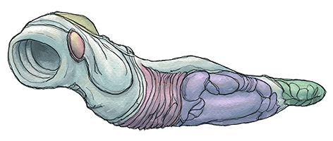

16 |
困ったときのQ＆A |
 |
オレ、youコンがみんなの質問に答えるぜ！ 
Q.“おひとりさま”に連れていかれた後、なにもすることがないのですが……。
A.“おひとりさま”で、長い長い反省時間が過ぎると監守が向かえに来てくれるけど、ずーっと待ってんのもタイクツだろ？Wiiリモコンを何回か振ってオレとお話してみないか？
Q.マッサージの方法がわかりません。
A.コツがあるんだよコツが。まずはオレの話をよーく聞いてツボを探してみることだ。ツボを見つけることができたら黄色いものが消えるまでツボを押しっぱなしにしてくれ。
Q.待ち時間が苦痛なのですが……。
A.“おひとりさま”ではオレをモミモミすればいいけど、収容者がどっかに行っちまったり、誰も話す気になってないときなんかはわりと手持ち無沙汰になっちゃうよな。そんなときは足。足を使ってみろ。人間は考えるアシだって誰かが言ってなかったっけ？地面をよくみるとヘンな虫がもぞもぞ動いめいてる。これは“オヒマツブシ”という虫だ。この虫を潰してると時間が早く過ぎていくような気がするから不思議さ。
Q.“ギミック”の場所がわかりません。
A.たしかにちょっと見つけにくいギミックがあるな。オレの世界モードで、あちこちポイントしてみてカーソルが反応する位置を探してみりゃいいんじゃないの？
Q.作業場でスープの色を変更する方法がわかりません。
A.調理方法はメモが落ちてるから見ればわかるって監守が言ってたけど、あんなメモじゃよくわかんないのが正直なところだな。を押すと調味料を選択できる。あとは簡単だ。普段オマエが調味料を使うとき、どんな風に味付けする？
Q.どのギミックを使えばどの欲求が解消されるの？
A.そいつは使ってみるまでオレにもわからんよ。オレが“ディシプリン”なわけじゃないからさ。
Q.クリアしたあとは？
A.クリアしたあと、クリアデータを記録すると一部の能力をひきついで最初からプレイしなおすことができるよ。タイトル画面からCONTINUEを選択してくれ。
以上、youコンが答えるよQ&Aでした！ 本当はオレ、説明とか向いてないんだけどな。 |
 |
 |